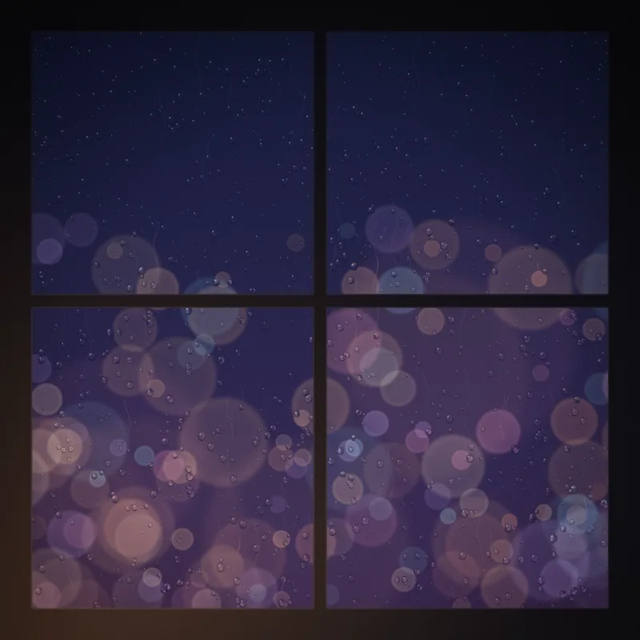

← Zurück — Musik
DeepScheitern
Musik.
Scheitern, aber mit Takt.
Der Teil von DeepScheitern, der nicht gespielt, sondern gehört wird. Entstanden wie alles hier: aus einem Versuch, der ursprünglich etwas anderes werden sollte.
Ruhige Instrumentals, elektronische Tracks, ein bisschen Dream-Pop. Manche Songs sind Ton für Ton in JavaScript programmiert, andere mit KI-Werkzeugen entstanden. Was wie gemacht wurde, steht immer dabei.
Erschienen
Die erste Single.

Where the Lights Blur
Geige und Klavier, langsam und leise. Für späte Abende, wenn draußen nur noch die Lichter der Stadt verschwimmen.
Mit KI-Werkzeugen erstellt
Direkt hier reinhören
Aus dem Code.
Diese Songs gibt es nur hier und in der Jukebox des Neonpalasts. Kein Instrument, keine Aufnahme: jede Gitarre, jeder Schlag und jeder Hall wird von einem JavaScript-Programm berechnet.
Pullover-Nacht
Countdown
Wo es zu hören gibt
Überall, wo Musik läuft.
Veröffentlichungen erscheinen auf den großen Plattformen. Die Links führen direkt dorthin, eingebettet wird hier nichts.